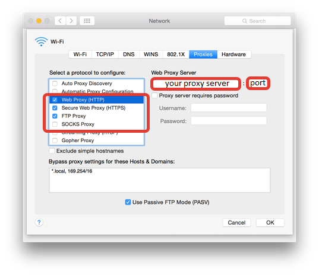

Troubleshooting tips¶
This topic describes troubleshooting tips for common Multi-OS Engine Technology Preview issues.
Content
Proxy Settings Issues¶
If you are behind proxy server and you see “gradle sync failed: operation timed out” error, you may need to configure the proxy in four places:
System settings
Go to System Preferences -> Network -> WiFi/Ethernet -> Advanced -> Proxy Tab -> set HTTP/HTTPS/FTP proxies
Bash proxy
Create ~/.bash_profile file and add these strings with your proxy settings:
export HTTP_PROXY=your_http_proxy_server:proxy_port
export HTTPS_PROXY=your_https_proxy_server:proxy_port
export http_proxy=your_http_proxy_server:proxy_port
export https_proxy=your_https_proxy_server:proxy_port
Gradle proxy
Create “gradle.properties” file in the folder ~/.gradle and add the following lines with proxy settings:
systemProp.http.proxyHost=your_http_proxy_server
systemProp.http.proxyPort=proxy_port
systemProp.https.proxyHost=your_https_proxy_server
systemProp.https.proxyPort=proxy_port
Android Studio proxy settings
Integration with Android Studio Issues¶
Running an app built in cloud on iOS device from 32-bit IDE on Windows failed with error:
Exception in thread "main" java.lang.UnsatisfiedLinkError: C:/Intel/multi_os_engine/tools/windows/x86_64/natj.dll: Can't load AMD 64-bit .dll on a IA 32-bit platform
The workaround is to use 64-bit version of Android Studio or IntelliJ IDEA.
Multi-OS Engine samples require setting active JDK version to 1.8 manually in Android Studio*. If it wasn’t done error can occur:
Invalid source release: 1.8
To resolve this issue, go to Android Studio* to File -> Project Structure -> SDK Location -> JDK location and specify path to JDK 1.8.
Bundle ID should match Provisioning Profile that is used for the signing application. Otherwise the error will occur during building for device:
Code Sign error: No matching provisioning profiles found: No provisioning profiles matching the bundle identifier "your_bundle_id" were found.
For more information about Bundle ID please visit: About Bundle IDs. Please refer to Project customization via Gradle to find more information about setting of the Bundle ID.
Launch on simulator may fail with error similar that:
dyld: app was built for iOS 9.0 which is newer than this simulator 8.4
It means that application was built with incorrect minimal version - 9.0, because app was launched with version 8.4 - older then minimal. To set valid minimal version is necessary to specify deploymentTarget option in build.gradle. Please refer to Project customization via Gradle to find more information about that.
Launch the application on the simulator is available only with the version of the simulator that corresponds version the currently installed iOS SDK. To launch application on previous versions of simulators might be possible from XCode (right click on module -> “Multi-OS Engine Actions” -> “Open Project in Xcode”) or by installing according iOS SDK on the system.
Launch on simulator may randomly fail with the following error:
Child process terminated with signal 6: Abort trap
Please stop all run or debug sessions and run the app again, it should help.
Launch on simulator version 8.4 may fail. Upgrade to latest simulator 9.3 or higher is recommended in this case.
IPA build (“Export IPA for Application” item in Android Studio “Build” menu) may fail right after project import. The workaround is to press the “Project” tab in Android Studio on the left side, after that IPA export will be successful.
IPA build (“Export IPA for Application” item in Android Studio “Build” menu) may fail after multiple builds. The workaround is to press the “Build->Clean Project” from Android Studio menu. After that IPA export will be successful.
Build immediately failed with the following messages on Multi-OS Engine tab:
Build started Build failed with error above
It means that gradle wrappers (gradlew, gradlew.bat and ‘gradle’ folder) are absent in your project root folder. Please copy them from any Multi-OS Engine sample.
iOS build may fail if Apple’s “world wide Developer relations certification authority” certificate is expired. Open “Keychain Access” program, select “login” keychain, select “My Certificates” category and click on your Apple certificate. If you see “This certificate has an invalid issuer” error, you should download new certificate here and install it.
If you don’t see any modules on Android tab in Android Studio after opening the project, or you see error messages “Unsupported module detected” or “You can’t have non-gradle Java modules and Android gradle modules in one project”, one of the following actions could help:
Go to File->Invalidate caches->Invalidate caches & restart
Press “Sync gradle” button in Android Studio
Import your project again
Runtime Issues¶
The only class loader the runtime supports is the bootstrap class loader. It constructs NoClassDefFoundError exceptions without detailed messages.
The runtime is derived from Android ART and inherits most Java packages it implements. The preloaded-classes.txt file, which resides in the installation directory, contains the list of the implemented Java packages:
To use Java packages that are not on the list add them as external dependencies for your project.
If external dependencies for your project implement classes on the list, the build will fail (the dex2oat tool will fail with an error message like “dex2oat … Check failed: method != NULL”).
Apple iOS API Bindings Issues¶
Variable argument functions/methods with a va_list parameter (e.g. vprintf) are currently not handled by Nat/J, but the generator still generates a binding for them. Nat/J only handles the method(param1, …) type variable argument functions at the moment.
If a “Division by 0” exception occurs after an incorrect NatJ initialization, start working with NatJ by creating an Obj-C class that implements a UIApplicationDelegate interface.
Missed NatJ annotations or misprints are not checked by the build system or NatJ initializer. Manually written methods with inaccuracies in annotation can lead to exceptions in runtime and undefined behavior.
[Limitation] Objects received from native can be wrapped to ios.NSObject without the possibility of further cast in case of corresponding java binding was not loaded by java class loader previously. To avoid this situation ask class loader to handle required java bindigs before receiving it. For example in static section like:
static { Class.forName(A.class.getName()); }
NUIntPtr uses sign extend instead of zero extend when retrieving values on 32-bit platforms. This causes incorrect values to be passed when the original value would be a negative integer.
UI Binding Generator Issues¶
Unstable work of UI binding generation feature. With correct .xib; .storyboard; .m; .h files UI binding generation procedure may require more than one attempt.
For successful UI binding generation, all necessary files (.storyboard, .xib, .h, .m) should be placed in Xcode* project directory. In current version this feature do not support reference on files in Xcode project.
UI binding generation for existing Java View Controller leads to that existing outlets and actions(in Java View Controller) stop working. The cause is difference in declarations of existing and generated outlets and actions. Workaround steps are the following:
Add annotation @Property to Java code for all generated outlets
Add implementation to Java* code for all generated actions
Exclude native source files (with implementation of view controllers) form build procedure.
Current implementation of wrapnatjgen only supports basic Obj-C protocol syntax. For example we support the following:
Obj-C code:
@protocol MyProtocol @end
@interface MyClass
- (void)foo:(id<MyProtocol>)c;
@end
Corresponding Java bindings code:
interface MyProtocol {}
class MyClass {
void foo(MyProtocol c);
}
Current implementation only checks class hierarchy and skips interface hierarchy. That is why the following example throw compilation error.
Obj-C code:
@protocol MyProtocol3 @end
@protocol MyProtocol4
- (void)foo:(id<MyProtocol3>)c;
@end
@interface MyClass3 : NSObject<MyProtocol4>
- (void)foo:(id<MyProtocol3>)c;
@end
Corresponding Java bindings code:
interface MyProtocol3 {}
interface MyProtocol4 {
void foo(Object c);
}
class MyClass3 extends NSObject implements MyProtocol4 {
// Java compilation error, foo(Object) not implemented
void foo(MyProtocol3 c);
}